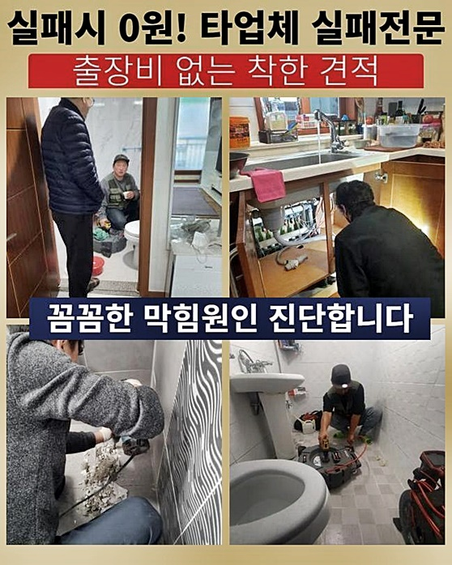
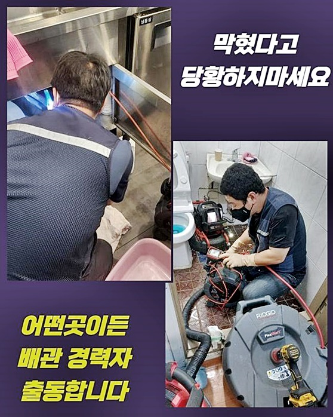
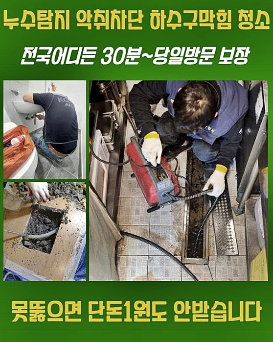
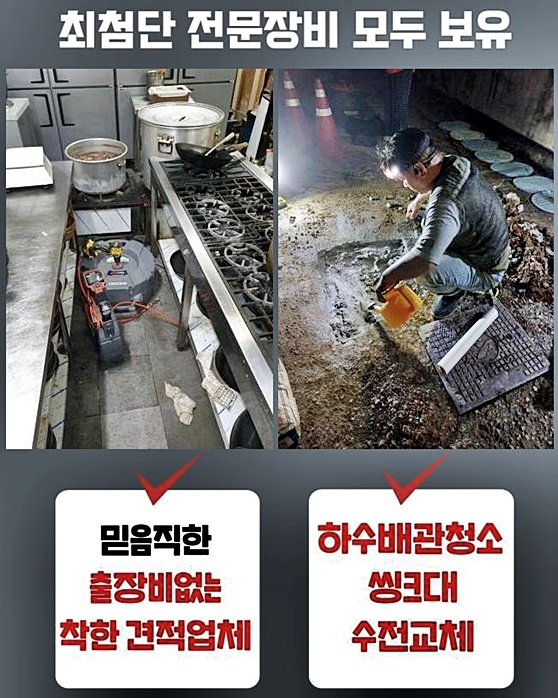
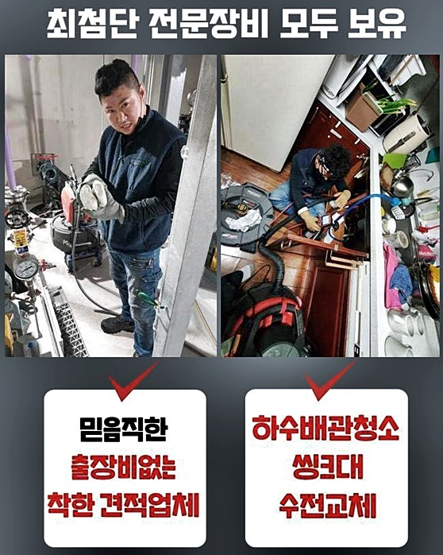
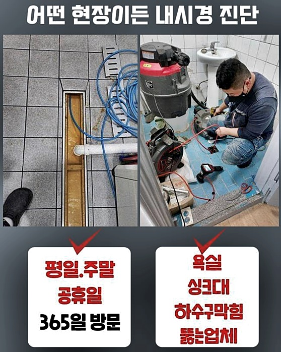
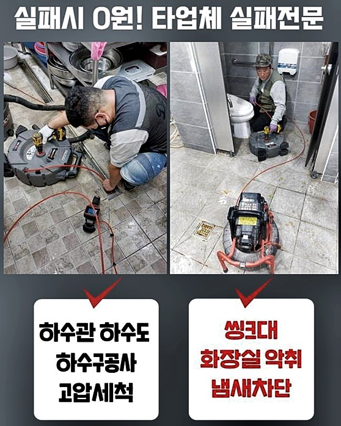

🏠 동대문 신설동세탁기배수구막힘 용신동 맨홀역류 배관공사
용인 변기막힘 전문 시공 후기

📋 작업 개요
- 위치: 용인
- 서비스 유형: 변기막힘, 하수구막힘, 배관막힘, 맨홀막힘, 역류해결, 배관청소, 고압세척, 설비공사, 배관보수
- 작업 일시: 2024. 7. 13. 8:14
- 업체명: 하수구수사대 (010-5615-2118)
🔍 문제 상황
동대문 신설동세탁기배수구막힘 용신동 맨홀역류 배관공사
오늘 저희는 하수관에 이상이 발생했을 때 전문인 결정방법에 관해 설명해드릴게요
수리업체 선정 시에 고려할점은 전문점의 하수관로막힘 변기 배수관막힘의 전문지식들과 노하우입니다
하수구관련 고장은 정밀하고 빠른 조치들이 필수라서 전문성과 경력이 풍부한 업체를 채택해야하죠
다른기준은 가격과 정비조건들을 살피는것입니다
작업내용과 가격은 중요한부분이지만 더많은 서비스들이나 보증조건등을 감안하여 종합적인 수리비를 파악하는 방법이 도움이됩니다
마지막엔 기존 소비자의 의견과 평가들을 주의깊게 보는것이 요구됩니다
다른 이용자의 이용기를 근거로 수리기사의 솔루션 퀄리티와 전문성을 평가할 수 있기 때문에 이과정을 통해 더욱 현명한 판단을 할수 있어요
그러니까 하수도막힘 문제가 생길 땐 적합한 하수배관막힘 욕실 배수설비막힘 잘 고치는 기술자를 만나려면 이런 항목들을 고려하여 선정하는 것이 바람직합니다
하수배관 장애를 검토하고 속안을 분석해나가는 작업중에 꼼꼼한 수리를 해 문제점을 고쳐나가며 고객분들의 만족을 위하여 최선을 다할것을 약속합니다
저희업체의 수리방법들은 체계적이며 다양한 경력들과 전문적인 기술로 의뢰인의 어려움을 해소해 드릴 것을 다짐합니다
오물들이 상당히 쌓인 지점에는 강한수압으로 청소를 했고 흡입기를 사용하여 장애요소들을 없앴습니다
그런다음 특화된장비들을 동원하여 침전물들과 세밀한 찌꺼기들을 강한수압으로 씻어냈습니다
이런작업을 통하여 문제 처리가 가능했으며 고장을 막기위해서는 지속적인 검사가 요구됨을 알려드려요

🔎 원인 분석
💡 전문가 진단: 정밀 진단 장비를 사용하여 슬러지의 고착 여부를 판명하고 타격/세척 작업을 실시했습니다.
내버려두면 더 커다란 이슈가 일어날 수 있기 때문에 정기적인 검사가 필요한것입니다
그러므로 저희업체는 근무시간을 제한하지 않으며 밤낮없이 대응할 수 있도록 대비를 하고 있습니다
다음순서로 저희전문가가 대응한 상황은 이른시간에 나타난 배수장애로 인해 욕실에 들어갔을때 심한냄새 때문에 상태가 긴급함을 인지했어요
정비를 하는 동안에는 적합한 세기를 이용하여 깨어내는 정비를 작업하여 장애원인을 꼼꼼히 분쇄한 후 흡입장치를 활용해 세심하게 흡입해줍니다
이런식으로 반복해서 불순물을 없애는 과정들을 완료하고 나서는 내시경장치를 넣어서 배수구 속을 세밀하게 검사합니다
깨끗해진 하수관 안의 현재상태를 의뢰인에게 공개하고
마지막으로 양변기에 물을 가득히 채워 물배출 검사를 이용해 물배출이 잘 되는지 살펴봅니다
작업을 세심히 진행하여 배수장애 상황을 수리했어요
화장실 세면대에 막힌하수관의 문제들이 나타나면 계획에 차질을 발생시킬 수 있죠
이러한 상황속에서는 이유들을 분석하고 빨리 처리하여야 합니다 그러나 이유를 확인하고 해결하는 일은 간단한 일은 아니에요
때문에 하수관막힘 전문팀의 도움이 중요합니다
우리는 전문적인 기기들과 장치들을 적용하여 이물질들을 정리하고 배수관 세척절차를 처리하였습니다
석션기기 굴착장치 청소도구들을 동원하여 이물질들을 제거해드리고 하수관 속을 청소했습니다
우선은 물을 틀어서 장애 상태를 점검하였고 면밀히 문제들을 알아봤죠

🔧 작업 과정
다른 전문가들이 찾아왔었지만 풀리지 않아 우리 수리기사님에게 손길을 요청하셨다고 했는데
우리업체는 수리에 해결이 안되면 금액을 청구드리지 않는 메뉴얼을 시행하는 중이므로 마음놓으셔도 괜찮습니다
효과적으로 해결한뒤에는 필요로할때 비용없이 보수를 이용하실수 있게 도와드리고 있습니다
배수장애 상황은 욕실 이용에 불편함을 주며 스케줄에 많은 불편들을 유발하게 됩니다
그러므로 신속한 대책을 강구해야 하며 하수배관막힘 욕실 배수설비막힘 전문팀의 도움이 필요하게 됩니다
우리업체는 소비자의 문제를 해결해드리며 원만하게 스케줄을 지속할수 있게 최상의 노력을 기울입니다
밤낮없이 지원이 요구되신다면 우리업체에게 연락부탁드립니다
하루종일 상담해드리고 있으며 주말 방문수리도 이용하실 수 있습니다
상쾌한 환경들을 만들어 나가려고 모든 노력을 기울이는 우리전문가와 같이 염려없는 일상을 즐기세요
세면기 아래쪽의 부품들을 떼어냈더니 조금의 물때가 존재했으나 근본적인 이유들은 그것처럼 간단한 것이 아니었어요
결과적으로 하수관 안쪽을 점검하려고 전용장비들을 사용해서 배수구 안쪽에서 점검해봤습니다
확인결과 하수도 속안에 다량의 찌꺼기와 머리카락들이 뭉쳐있어 이것들이 물빠짐을 지연시키는 요인이었어요
다음단계로 고급의 소독수나 세정제를 사용해 하수구를 깨끗하게 세척해주었습니다
이를 바탕으로 물빠짐이 확실히 작동되도록 조치하였습니다
마지막엔 고객분께 배수관에 조금의 물때들이나 이물질들이 모이지 못하도록 유의할 것들을 안내했습니다
문제를 처리하려고 내시경기기를 사용하여 배수관 속안을 검사한결과 팔이 닿지 않는 위치에서 석회물질들이 단단히 고정된 현상을 확인할 수 있었습니다
석회질은 많은 이물질이 누적되고 결합해 하수관을 가로막을 수 있는 성분으로 관리를 안하면 배수가 원활이 안되거나 배수관에 손상들을 유발합니다
그래서 석회성분을 없애려고 했고 실행하기 위하여 플렉스샤프트 기구를 활용하였습니다
이 기구를 이용하여 석회성분을 작게 깨고 효율적으로 없애서 하수도의 원래 기능을
이처럼 석회질을 제거해서 하수배관막힘 현장의 주요 이유를 처리해드렸습니다
특정상황이 벌어진 요인를 못 찾으면 문제해결을 할 수가 없기에 빠른속도로 상황들을 이해하고 점검했습니다
변기를 떼어내고 하수관에 내시경장치를 투입하였더니 배수장애의 요인을 찾게되었어요


✅ 작업 완료
예전에도 수리했지만 딱딱한 이물질이 누적되어서 배수상태가 좋지 않았습니다
이것을 없애려 노력하며 고객분께 내시경장비로 상태를 보여주면서 말씀드렸습니다
현상태의 이유를 밝혀내기위해 모든노력을 다했기에 왜 그러한 현상이 생기게 되었는지 알았어요
이런 현상을 예방하고자 하면 규칙적인 하수관 관리와 청소가 필요함을 전달했습니다
만족할 수 있는 하수도막힘 화장실 오수관막힘 수리를 제공할 수 있게 더욱더 노력할 것입니다
이 같은 도움을 지원할 수 있는 베테랑을 선택하시는게 최상의 선택입니다




⚠️ 하수구 배관 막힘 예방 및 관리 가이드
- ✅ 머리카락, 비닐, 물티슈 등 물에 분해되지 않는 이물질은 하수구 유입을 절대 금지해 주세요.
- ✅ 하수구 거름망을 씌우고 모여진 이물질은 주기적으로 쓰레기통에 바로 비워주셔야 합니다.
- ✅ 배관 노후가 심할 경우 이물질이 더 쉽게 걸리므로 주기적인 배관 세척(고압세척 등)을 권장합니다.
- ✅ 작업 후 1년 이내 재발 시 하수구수사대에서 무상 A/S 보증 서비스를 제공합니다.
💡 핵심 정리
- 확실한 장비 작업(내시경 점검 및 샤프트 스케일링)으로 원인을 뿌리 뽑습니다.
- 작업 후 1년 이내에 동일한 부위 재발 시 100% 무상 A/S 서비스를 보장합니다.
- 서울 · 경기 · 인천 전 지역에 24시간 언제든 긴급 출동할 수 있도록 항시 대기 중입니다.
❓ 자주 묻는 질문 (FAQ)
🚨 용인 변기막힘 문제로 고민이신가요?
정확한 원인 진단과 확실한 시공으로 재발 없는 해결을 약속드립니다.
24시간 긴급 출동 | 서울 · 경기 · 인천 전지역 | 1년 내 재발 시 무상 A/S